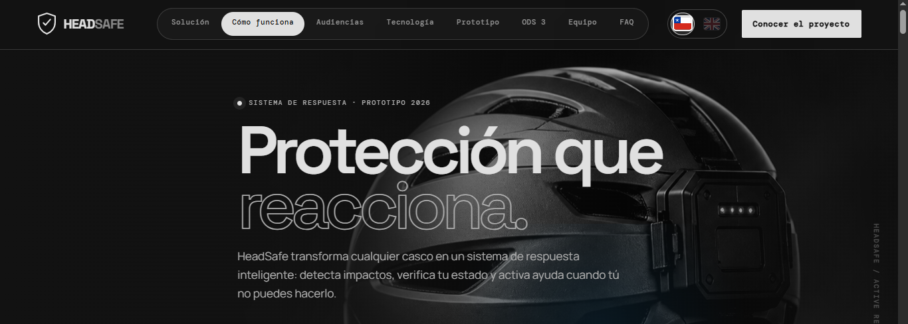
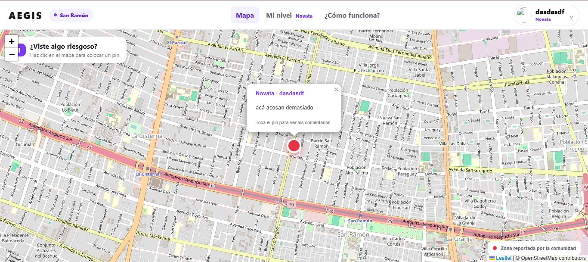
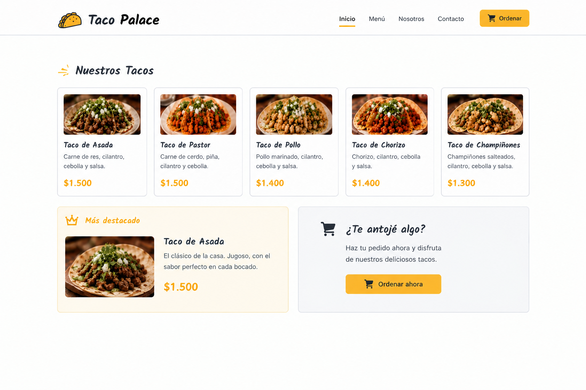

Frontend
Desarrollo de interfaces y estructuras visuales enfocadas en la organización, presentación y experiencia del usuario.
HTML
CSS
JavaScript
PORTAFOLIO / DESARROLLO WEB
Recién egresado del área de programación, interesado en el desarrollo de aplicaciones web y la creación de soluciones digitales. Me gusta explorar nuevas tecnologías, construir proyectos y transformar ideas en experiencias funcionales para los usuarios.
01 / PERFIL
01Mi interés por la programación nació de la posibilidad de crear herramientas digitales y convertir ideas en proyectos funcionales. Durante mi formación académica pude conocer diferentes áreas del desarrollo web y experimentar con tecnologías tanto de Frontend como de Backend.
Me interesa seguir profundizando mis conocimientos, aprender nuevas herramientas y participar en proyectos donde pueda aportar ideas, resolver problemas y continuar desarrollándome profesionalmente.
02 / EDUCACIÓN
02Mi recorrido educativo y los conocimientos que he adquirido para comenzar mi camino en el desarrollo tecnológico.
Inicio de mi enseñanza media, donde fui fortaleciendo mis habilidades y tratando de mejorar mis debilidades. Me ayudó mucho a conocerme y darme oportunidades para mi futuro.
Aprendizaje
Skillnest - Flask, Python, MySQL - Finalización de enseñanza media y formación relacionada con el área de programación y desarrollo tecnológico.
03 / CONOCIMIENTOS
03Tecnologías con las que he trabajado durante mi formación y en el desarrollo de proyectos personales y académicos.
Desarrollo de interfaces y estructuras visuales enfocadas en la organización, presentación y experiencia del usuario.
Programación de funcionalidades, manejo de rutas, validación de información y desarrollo de la lógica de aplicaciones web.
Organización y almacenamiento de información, consultas SQL y conexión entre aplicaciones y bases de datos relacionales.
04 / ENTORNO DE TRABAJO
04Aplicaciones y plataformas que utilizo para escribir código, gestionar proyectos y trabajar con información.
Edición de código y organización de proyectos.
Almacenamiento y publicación de repositorios.
Administración y consulta de bases de datos.
Desarrollo de aplicaciones web con Python.
Estructuración de páginas web.
Diseño y estilos de interfaces web.
Programación y desarrollo de aplicaciones.
Interactividad y funcionalidades web.
05 / TRABAJO REALIZADO
05Una selección de trabajos académicos, personales y colaborativos donde he podido aplicar mis conocimientos y experimentar con distintas tecnologías.

01 / COLABORATIVOProyecto orientado a la seguridad y prevención de accidentes mediante el uso de tecnología. Su propuesta busca ayudar a proteger a las personas mediante herramientas de detección y comunicación ante situaciones de riesgo.
Desarrollo web · Trabajo colaborativo
Explorar proyecto ↗
02 / PROTOTIPOPrototipo de aplicación web que propone una herramienta para enfrentar el acoso callejero en la comuna de San Ramón. Incluye la idea de un mapa interactivo con puntos de alerta para compartir información sobre lugares de riesgo y promover la prevención comunitaria.
Aplicación web · Mapa interactivo · Seguridad
Explorar proyecto ↗
03 / PRIMEROS PROYECTOSPágina web inspirada en un restaurante de tacos, desarrollada durante mis primeros aprendizajes de HTML y CSS. El sitio incorporaba una barra de navegación, tarjetas de productos, una sección destacada y elementos visuales para presentar una propuesta gastronómica.
HTML · CSS · Diseño web
Proyecto de aprendizaje06 / EXPERIENCIA PRÁCTICA
06Mi experiencia se ha desarrollado principalmente mediante proyectos académicos y colaborativos, donde he podido llevar los conocimientos teóricos a situaciones prácticas.
He trabajado en aplicaciones utilizando Python, Flask y MySQL, implementando funcionalidades como registro de usuarios, inicio de sesión, gestión de información y conexión con bases de datos.
PROYECTOS ACADÉMICOSHe participado en proyectos donde la organización, comunicación y distribución de tareas permiten desarrollar una solución conjunta.
TRABAJO EN EQUIPO07 / PROYECCIÓN
07Mi objetivo es continuar creciendo en el área tecnológica, llegando a la educación superior quiero seguir profundizando mis conocimientos en desarrollo FullStack y ampliando mi experiencia mediante nuevos proyectos.
Quiero seguir aprendiendo diferentes tecnologías, mejorar mi capacidad para resolver problemas y participar en equipos donde pueda compartir conocimientos y enfrentar nuevos desafíos.
Conectemos ↗Ampliar mis conocimientos en programación.
Participar en proyectos y nuevos desafíos.
Terminar una carrera en el área de programación.
08 / CONTACTO
08Estoy abierto a conocer nuevas personas, participar en proyectos y encontrar oportunidades que me permitan continuar desarrollándome en el mundo de la tecnología.
Puedes escribirme o visitar mis perfiles profesionales. Estaré encantado de conectar y conocer nuevas oportunidades.
Enviar un correo ↗